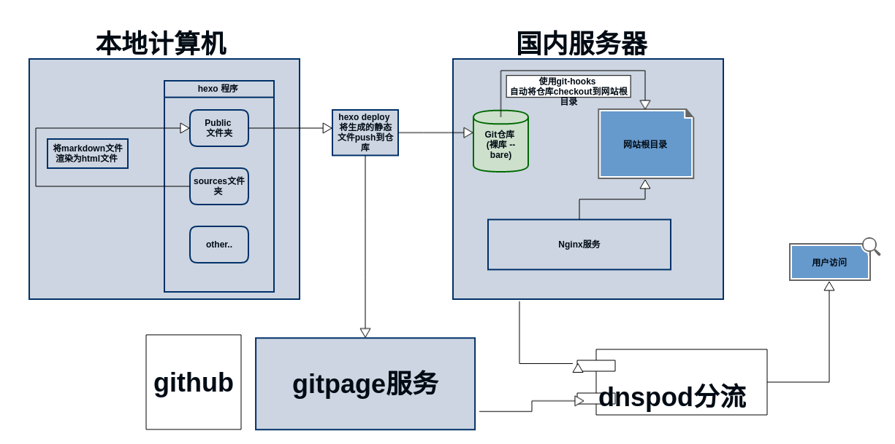

之前购买了腾讯云主机,安装了ubuntu 系统,现在想把github上的hexo博客同步到国内的腾讯云主机,提高国内的访问速度.
1.首先是整个思路的介绍
(这里非常感谢后面参考的一篇blog)
看下面的架构图

其实就是用hexo将本地的*.md渲染成静态文件,然后Git推送到服务器的仓库,和搭建好的gitpages.
服务器再通过git-hooks同步网站根目录.
每次deploy 同时推送到两个仓库；再使用腾讯云的dnspod
分流.使国内ip可以访问国内服务器,国外ip访问gitpage(可能没有国外ip访问…)
2.整个流程
- 服务器环境搭建,包括创建 git 用户,安装git,githooks配置 和nginx配置
- github的 gitpage设置,以及添加一个ssh-key
- 本地的hexo 初始化,包括安装 Nodejs, hexo-cli,生成本地静态博客
- 设置git自动化部署发布博客
- 腾讯云的dnspod设置
3.腾讯云环境搭建
3.1安装git
sudo apt-get install git
添加git用户
sudo adduser git
切换到git用户下
su git
确保所有操作相关的文件属于git用户
添加 ssh 并测试
cd ~
一般没有.ssh文件夹,现在需要添加
1
2
3
4
5
6su git
mkdir ~/.ssh
vim ~/.ssh/authorized_keys
#然后将电脑中执行 cat ~/.ssh/id_rsa.pub | pbcopy ,将公钥复制粘贴到authorized_keys
chmod 600 ~/.ssh/authorzied_keys
chmod 700 ~/.ssh
然后就可以执行ssh命令测试是否可以免密登录
ssh -v git@server
创建git仓库
1 | su git |
使用githook来同步网站根目录
在这里使用post-receive这个钩子，单git有收发的时候就会调用这个钩子。在~/blog.git裸库的hooks文件夹中，新建post-receive文件。1
2
3
4vim ~/blog.git/hooks/post-receive
#!/bin/bash
git --work-tree=/var/www/hexo --git-dir=~/blog.git checkout -f
保存后，要赋予这个文件可执行的权限
chmod +x post-receive
3.2安装并配置nginx来达到访问目的
安装
简单的方式
sudo apt-get install nginx
也可以下载源码包编译安装
配置
这里我使用的方法虽然有效，但是比较暴力。
在/etc/nginx/conf.d/目录下
1
2
3
4
5
6
7
8
9
10
11
12
13
14vim myblog.conf
server {
listen 80 default_server; # 服务器配置端口，不修改
#listen [::]:80 default_server;
root /var/www/hexo/; # 文件路径，改成你需要设置的路径
# Add index.php to the list if you are using PHP
index index.html index.htm index.nginx-debian.html;
server_name 115.159.108.204; # ip地址，也可以是域名。
location / {
# First attempt to serve request as file, then
# as directory, then fall back to displaying a 404.
try_files $uri $uri/ =404;
}
}
之后在/etc/nginx/sites-enabled目录下先把default文件移走，备份后
删除掉这个文件
nginx -s reload#重新载入配置文件
重启nginx即可
4.本地的hexo 初始化,包括安装 Nodejs, hexo-cli,生成本地静态博客
4.1 初始化Hexo博客
首先要安装 hexo-cli，安装hexo-cli 需要 root 权限，使用 sudo 运行
sudo npm install -g hexo-cli
然后初始化Hexo程序
~/Documents/code 1
hexo init blog
等执行成功以后安装两个插件,hexo-deployer-git 和 hexo-server ,这俩插件的作用分别是使用Git自动部署，和本地简单的服务器。
1
2npm install hexo-deployer-git --save
npm install hero-server
4-2. 生成自己的第一篇文章 hello world !
使用 hexo new <文章名称> 来新建文章，该命令会成成一个 .md文件放置在 sources/_posts文件夹。
hexo new “hello Hexo”
vim sources/_posts/hello-hexo.md
编辑完毕以后， 使用hexo g将 .md文件渲染成静态文件，然后启动hexo-server：
hexo g
hexo server
现在便可以打开浏览器访问 http://localhost:4000 来查看我们的博客了！
5. 自动化部署
5-1：服务器上建立git裸库
创建一个裸仓库，裸仓库就是只保存git信息的Repository, 首先切换到git用户确保git用户拥有仓库所有权
一定要加 --bare，这样才是一个裸库。
su git
cd ~
git init --bare blog.git
本地操作
修改原来的git提交方式为ssh
添加自己主机的仓库
修改_config.yml，找到deploy:的地方，把那一段代码修改
比如我的
1
2
3
4
5
6- type: git
repo: git@github.com:bmyell/bmyell.github.io.git #gitpage地址
branch: master
- type: git
repo: git@115.159.108.204:/home/git/blog.git #腾讯云服务器地址
branch: master
可以更新博文
执行;
1
2hexo g
hexo d
5.使用域名解析服务分流
这里修改解析到GitHub Pages 的记录线路类型改成国外,增加解析到腾讯云服务器ip地址的记录.